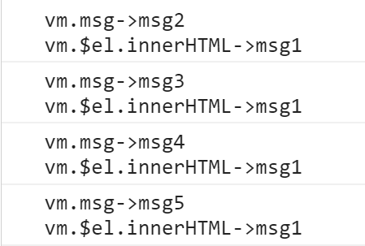

一、vue实例
<div id="app"> |
- 为什么data会直接出现在vm实例对象中咧？
- 当创建vue实例时，vue会将data中的成员代理给vue实例，目的是为了实现响应式，监控数据变化，执行某个监听函数
- 实例中除了data数据外，其他东西是啥?
因为会将data中数据代理给vue，假如说我们自己写的data名称和vue中自带的属性冲突了，那么就会覆盖vue内部的属性
所以vue会把自己内部的属性成员名称前加上
$或_如果加上的是
$，代表是我们可以使用的如果加上的是
_，是vue自己内部使用的方法或属性，我们不需要调用
- vm.$el
- 值为被Vue控制的元素（或者说，Vue挂载的元素）
二、更改数据后，页面会立刻重新渲染吗？
vue更新DOM的操作是异步执行的，只要侦听到数据变化，将开启一个异步队列
如果一个数据被多次变更，那么只会被推入到队列中一次，这样可以避免不必要的计算和DOM操作
同步执行栈执行完毕后，会执行异步队列
下面代码中重复改变vm.msg的值但是页面只渲染一次
<div id="app">{{msg}}</div> |

三、如何在更改数据后，看到渲染后的页面上的值？
- 利用vm.$nextTick或Vue.nextTick，在页面重新渲染，DOM更新后，会立刻执行vm.$nextTick中的方法
<div id="app">{{ msg }}</div> |
- vm.nextTick和Vue.nextTick还可以作为Promise使用
<div id="app">{{ msg }}</div> |
- vm.$nextTick 和 Vue.nextTick的区别？
vm.$nextTick内部函数的this指向Vue实例对象
Vue.nextTick内部函数的this指向window
vm.$nextTick(function () { |
- 宏任务与微任务
| 异步任务 | 微任务 | 宏任务 |
|---|---|---|
| 执行速度 | 快 | 慢 |
| 执行顺序 | 先执行 | 后执行 |
// 控制台打印顺序：promise > timeout |
- 好奇nextTick是怎么实现的吗？
- 在nextTick的实现源码中，会先判断是否支持微任务，不支持后，才会执行宏任务
if(typeof Promise !== 'undefined') { |
- 曾经vue用过的宏任务
- MessageChannel 消息通道 宏任务
四、vue小缺点
- vue一直等待主线程上的任务执行完毕，假如主线程上的任务执行时间长了或者出现了其他的问题，那么页面就卡死了